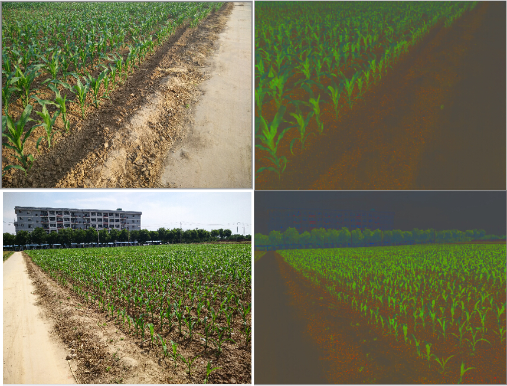
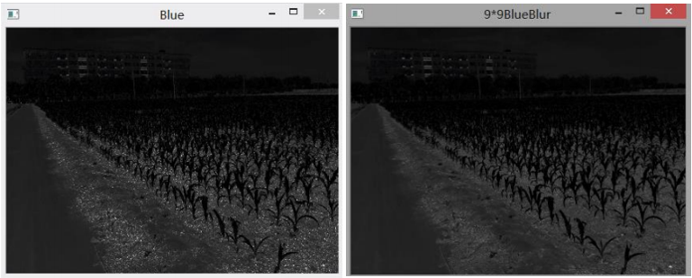
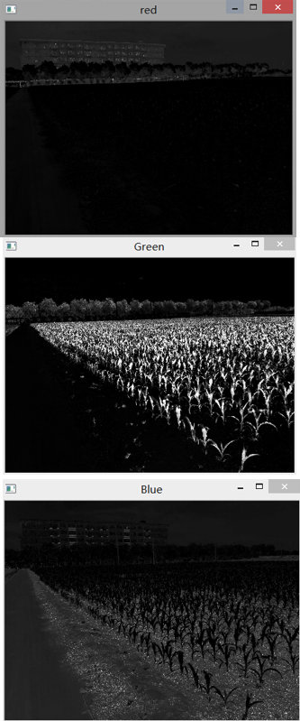

数字图像处理与分析是农业现代化中的一个重要的技术。为实现农田中的对象分类和语义标注，本文首先利用农田中场景不同对象的颜色特征，实现了农田图像的灰度化，以此为基础，分别利用K-means聚类方法结合阈值法，实现了农田图像的分割。然后利用直方图的相似度和颜色特征向量，基于支持向量机（SVM）分类器， 实现了未知农田图像中对象的分类及语义标注。论文对大田作业场景中智能农机的视觉环境感知的研究具有一定的参考意义。
研究目的与意义
(1)农业现代化与无人机技术发展
(2)农业图像处理在精准农业(Precision Agriculture )方面发展越来越迅速，使用信息技术，把空间的变化，定时，定位定量的实施农业技术操作和管理。可以精准的进行农药投放,利用机器视觉和图像分割技术实现对农田对象的分割和识别，可为定点变量喷洒提供参考。
(2)农业图像处理在精准农业(Precision Agriculture )方面发展越来越迅速，使用信息技术，把空间的变化，定时，定位定量的实施农业技术操作和管理。可以精准的进行农药投放,利用机器视觉和图像分割技术实现对农田对象的分割和识别，可为定点变量喷洒提供参考。
农田图像的获取和预处理
本文以西北农林科技大学北校区试验田的农业试验田为拍摄地点， 拍摄时间为 2015年 5 月 23 日每天中的不同时段不同光照条件下拍摄的 66 张图片, 分辨率为 4208*3120 保存为 sRGB 颜色空间以 JPEG 的格式保存.
农田图像的预处理
农田图像的预处理，对于后续的图像分割，分类以及标注有一定的积极影响。预处理能够消除因为拍摄器材或者其他因素的干扰，可以突出目标的对象信息。颜色空间归一化处理
农田的光照会因为位置因素使获得的照片对于图像分割产生干扰且这种干扰无法完全消除，并且由于玉米植株在光照下产生阴影对土壤分割的影响，为了减少这种干扰，需要将图像进行归一化处理。RGB颜色空间中三个通道共同完成图像的构成，RGB 颜色空间不直观，像素的RGB 值很难反映该值[李先锋等2010]，所代表颜色的认知属性图像的完整显示必须靠这些分量来完成，将RGB值进行归一化处理是去除光照和阴影影响一种简单和有效的方法，其转换公式为 $$r+g+b=1 $$ $$r= \frac{R}{R+G+B} \qquad g= \frac{G}{R+G+B} \qquad b= \frac{B}{R+G+B}$$

农田图像降噪预处理
降噪预处理:图像降噪预处理属于图像增强效果其目的是改善图像的视觉效果或使图像更适合于人或机器分析处理.本部分使用9*9模板大小的中值滤波。中值滤波对脉冲噪声有良好的滤除作用，在滤除噪声的同时，能够保护信号的边缘，使之不被模糊。

农田图像的分割
图像分割(Segmentation)指的是将数字图像细分为多个图像子区域的过程. 常用的分割方法有阈值分割，区域分割，边缘分割，直方图法，聚类分析，模糊集理论，小波变换. 尽管已经提出大量的图像分割算法，但大多是针对具体问题，没有适合所有的图像分割算法。[数字图像处理第三版何东健等] M. Guijarro等人在论文《农田图像的问题自动分割》中提出基于农田图像的超绿因子，超蓝因子,超红因子对农田图像进行灰度化，得到对应的3种灰度图 3类灰度图像分别对绿色植物模块蓝色天空模块和褐色土壤模块具有识别优势，较其他灰度方法识别和分割精度更高。本文采用K-means聚类算法和阈值法来分割出农田中的对象。 由于这些分割对象的颜色成分在三个通道中占有成分是不同的，所以用这一成分作为分割手段的条件。使用三个公式处理彩色图像的三通道。 可以得到农田图像的三种灰度图，分别是极绿因子EXG，极蓝因子EXB，极红因子EXR所取得 $$EXR = 1.4r-g$$ $$EXG = 2g-r-b$$ $$EXB = 1.4b-g$$
